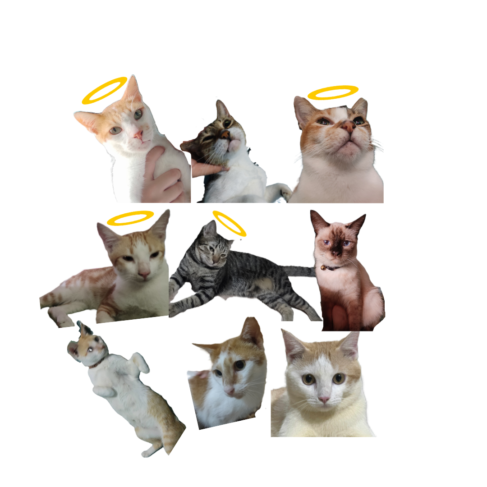
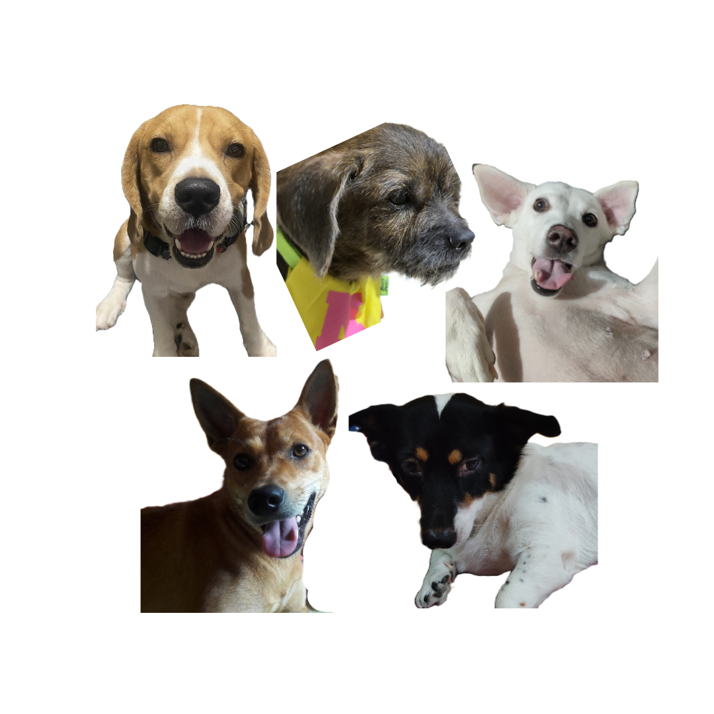

My pets hold a special place in my life, as they bring joy, comfort, and companionship every day.
I have cared for both dogs and cats, each with their own playful and loving personalities. Although some of them have already passed away, their memories continue to live on and will always remain meaningful to me. 🐾
Go Back